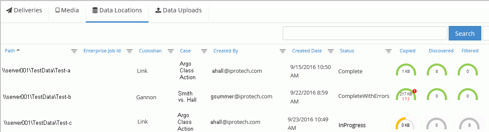
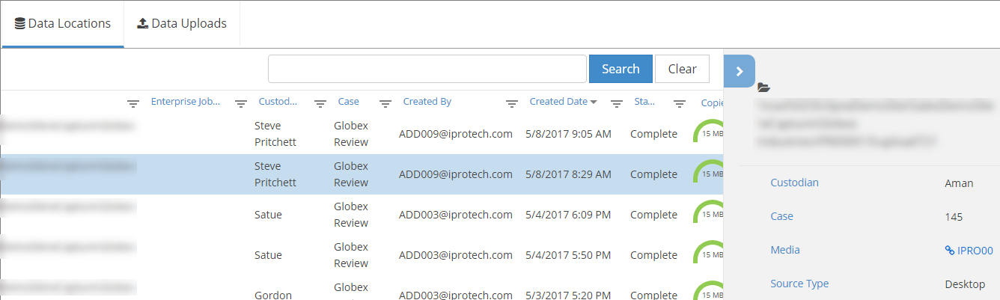

Note: Data locations listed more than once have been selected for more than one media.
Data locations refer to where the data you are processing is actually located, such as a network share location, an external drive, a folder on an external drive, etc. You can view and manage your data locations via the Data Locations tab.
The Data Locations tab displays a list that contains a summary of all data locations selected for all media jobs.

|
|
Note: Data locations listed more than once have been selected for more than one media. |
The list contains the following columns:
|
Column |
Description |
||
|
Path |
Data location path selected as part of media definition. |
||
|
|
Job
identification assigned in the
|
||
|
Custodian |
The data owner selected as part of the media definition. |
||
|
Case |
The case selected as part of the data source definition. |
||
|
Created By |
The Media Manager user who connected the data location to the media. |
||
|
Created Date |
The date and time the data location connection was completed for the media (that is, all steps completed and the Process button clicked). |
||
|
Status |
The processing job status. |
||
|
Job Details |
File/data
progress details as described in |
To view details for a specific data location and associated media:
In Media Manager, click the Data Locations tab.
Locate a needed data location in the Data Locations list.
|
|
See |
Click an individual data location to view its details, which appear in a pane on the right side of the Data Locations list, as shown in the following figure.

Take any of the following actions:
Review
data location details. You may need to scroll in the browser to see all
information. Details are taken from
Click the Media link to view associated details in the Media tab.
Close the details pane by clicking .
Related Topics